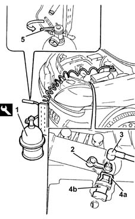
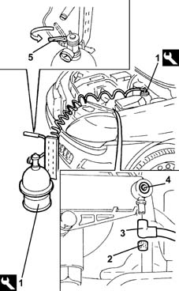
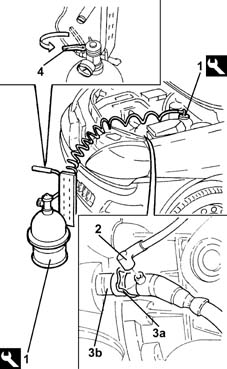

0010T67 hydraulic clutch system bleed air
- Path
- Procedures > 00 MAINTENANCE > 0010 NEW UNITS AND PLANNED MAINTENANCE'. > 0010T vehicle oil and fluids > 0010T67 hydraulic clutch system bleed air
- Kind
- repair procedure (removal / refitting; the operation number is the code)
- Applies to
- all engines; all production periods
- Interactive page
- https://sloeber94.github.io/elrnDB-lYpsln/en/#/2428831
Applies to: engines: 1.2 8v, 1.2 16v, 1.4 16v; all production periods
Position the vehicle on the ramp.
Check that the brake-clutch fluid in the reservoir is at the maximum level; if not, top up with the recommended fluid.
 | Type | Component | Name | Qty. |
|---|---|---|---|---|
- | Synthetic fluid | BRAKE-CLUTCH HYDRAULIC SYSTEM | TUTELA TOP 4 | - |
The symbol on the container identifies synthetic type brake fluids as opposed to mineral type brake fluids. The use of mineral type fluids irreparably damages the special rubber seals in the hydraulic braking system.
Proceed with removal 5530B10 battery - r+r .
Proceed with removal 5530B52 Battery DRIP TRAY/SUPPORT - R.R. .
Applies to: engines: 1.3 JTD; all production periods
Position the vehicle on the ramp.
Check that the brake-clutch fluid in the reservoir is at the maximum level; if not, top up with the recommended fluid.
If the brake-clutch fluid level is being topped up, remove the cap and introduce fluid until the maximum level is reached.
| Type | Component | Name | Qty. |
|---|---|---|---|---|
- | Synthetic fluid | BRAKE FLUID | TUTELA TOP 4 | - |
The symbol on the container identifies synthetic type brake/clutch fluids as opposed to mineral type fluids. The use of mineral type fluids irreparably damages the special rubber seals in the hydraulic braking system.
Proceed with removal 5530B10 battery - r+r .
Proceed with removal 5530B52 Battery DRIP TRAY/SUPPORT - R.R. .
1. Remove the brake-clutch fluid reservoir cap and connect the equipment to the reservoir.
 | Name | Country |
|---|---|---|
1 | Anti-pollution | 1.806.097.000 |
2. Remove the cap on the bleed valve.
3. Connect the collection system (pipe and reservoir) to the bleed valve on the clutch operating cylinder.
4. Lift retaining clip (4a) until the first click is heard and remove pipe (4b) sufficiently to uncover the bleed hole.
5. Slowly open the fluid reservoir cock.
Wait until all the air contained in the hydraulic system has emerged.
Fit the pipe fully home in its seat on the clutch operating cylinder and secure with the retaining clip.
Connect the collection system (pipe and reservoir) to the bleed valve on the clutch operating cylinder.
Place the cap in its housing on the bleed valve.

Applies to: engines: 1.2 8v; all production periods
1. Connect the tool to the brake-clutch fluid reservoir.
| Name | Country |
|---|---|---|
1 | Anti-pollution | 1.806.097.000 |
2. Remove the cap on the bleed valve.
3. Connect the collection system (pipe and reservoir) to the bleed valve on the master cylinder.
4. slacken the bleed screw;
5. Slowly open the fluid reservoir cock.
Wait until all the air contained in the hydraulic system has emerged.
tighten the bleed screw.
Remove the fluid collection devices.
Place the cap in its housing on the bleed valve.
Remove the equipment.
| Name | Country |
|---|---|---|
- | Anti-pollution | 1.806.097.000 |

Applies to: engines: 1.3 JTD; all production periods
.
Remove the equipment.
| Name | Country |
|---|---|---|
- | Anti-pollution | 1.806.097.000 |
Proceed with refitting 5530B52 Battery DRIP TRAY/SUPPORT - R.R. .
Proceed with refitting 5530B10 battery - r+r .
Remove the car from the ramps.
Applies to: engines: 1.2 16v, 1.4 16v; all production periods
1. Connect the tool to the brake-clutch fluid reservoir.
| Name | Country |
|---|---|---|
1 | Anti-pollution | 1.806.097.000 |
Remove the cap on the bleed valve.
2. Connect the collection system (pipe and reservoir) to the bleed valve on the clutch operating cylinder.
3. Lift the retaining clip (3a) until the first click is heard and remove the pipe (3b) sufficiently to uncover the bleed hole.
4. Slowly open the fluid reservoir cock.
Wait until all the air contained in the hydraulic system has emerged.
Fit the pipe fully home in its seat on the clutch operating cylinder and secure with the retaining clip.
Remove the fluid collection devices.
Place the cap in its housing on the bleed valve.
Remove the equipment.
| Name | Country |
|---|---|---|
- | Anti-pollution | 1.806.097.000 |

Applies to: engines: 1.2 8v, 1.2 16v, 1.4 16v; all production periods
.
Proceed with refitting 5530B52 Battery DRIP TRAY/SUPPORT - R.R. .
Proceed with refitting 5530B10 battery - r+r .
Remove the car from the ramps.
Check correct clutch disengagement and gear engagement.
Topics linked from this page (2)
Topics that link to this page (5)
- 1820B20 (Pump) - MASTER CYLINDER R.R.
- 1820B30 OPERATING CYLINDER/CLUTCH HYDRAULIC ACTUATOR - R.R.
- 1820B40 FLEXIBLE PIPE from clutch reservoir to (pump) - master cylinder R.R.
- 1820B49 Supply PIPE from (pump) - master cylinder R.R.
- 1820B59 Hydraulic clutch circuit vibration DAMPER with inlet and outlet pipes - R.r.